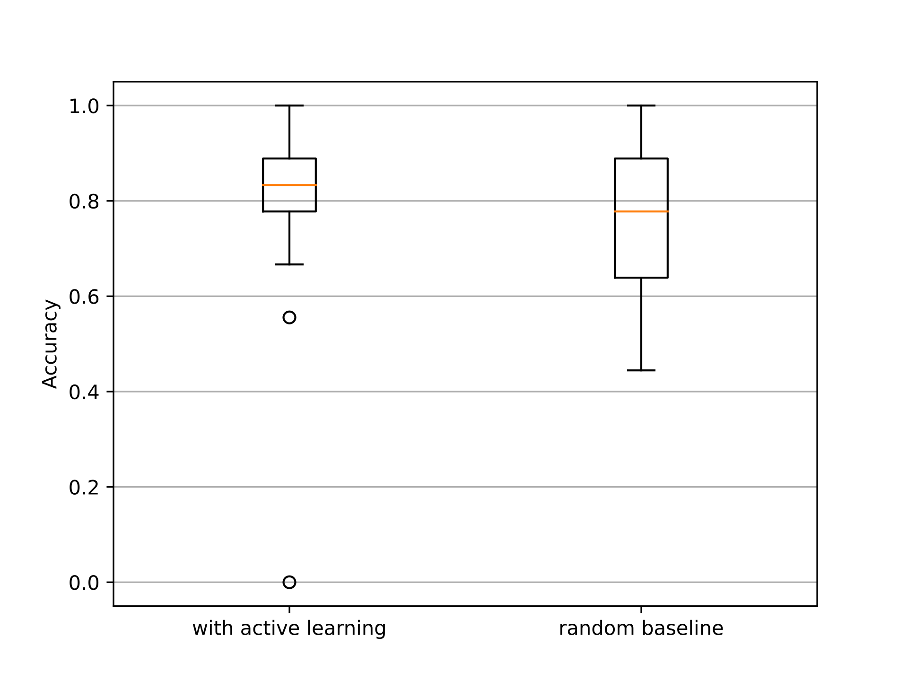
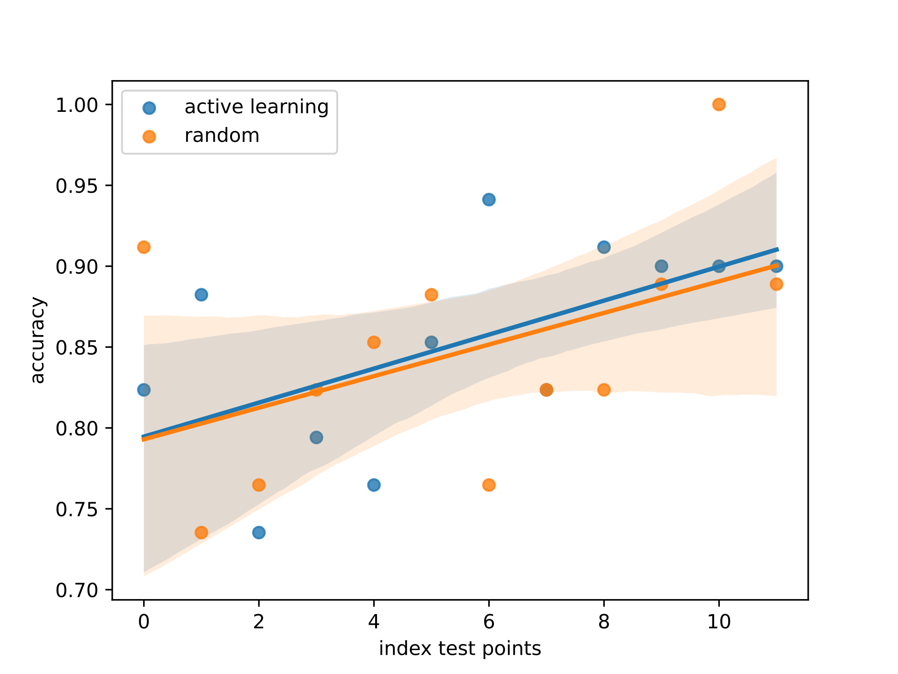

When teaching something new to someone, we often have the intuition that if we present the right examples, the person will learn faster.

In machine learning, finding the best points to train an algorithm is called Active Learning (AL).

Sometimes, algorithms and humans are called to solve the same tasks. For example, both medical students and algorithms learn to distinguish cancerous from benign images:

(Figure taken from Esteva et al., Dermatologist-level classification of skin cancer with deep neural networks, 2017)
Hence, for a given task, their are helpful points for humans $ \mathcal{D}^\mathcal{H} $ , and helpful points for algorithms $\mathcal{D}^\mathcal{A} $ that comes from the same dataset $\mathcal{D}$.
From there, a natural question to ask is whether there is an overlap between those two sets of helpful points?
This is what we aim to verify in our experiment.
The experiment
In summary, we compare the performance of humans that were shown random examples to the performance of humans that were shown examples from $\mathcal{D}^\mathcal{A} $.Highlevel overview of the experimental steps
- The user arrives.
- Randomly select the AL or Random mode for that user.
- Show an initial training set $\mathcal{D}^{0}$ to the user.
- If the user is in Random mode:
- Randomly select another example from $\mathcal{D}$.
- The example and its label is shown to the user.
- If the user is in AL mode:
- Select a random point from $\mathcal{D}^\mathcal{A} $.
- The example and its label is shown to the user.
- Repeat the previous step a few times.
- Test the performance of the user:
- Select an unseen point.
- The example is shown to the user without its label.
- The user is asked to provide the label of the example.
- Repeat the previous step a few times.
- Store the user's performance (the fraction of their provided labels that were correct) with the mode.
Preliminary Results
Our preliminary results are interesting. Ealy results are leaning in favor of our hypothesis:In average, humans trained with $\mathcal{D}^\mathcal{A} $ outperform humans trained with random examples. However, this result does not come with statistical significance so it should not be taken as a definitive answer. More data is needed.

Initial results for the color experiment. $N=40$, $AL=18$ $Random=22$. **No statistical significance.
Also, we observed the interesting phenomenon during the testing phase. The accuracy or performance of humans significantly improves during the testing process, showing that the humans keeps learning as they are being tested.
People keep learning during the testing phase, when no label is provided.